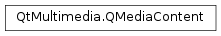

QMediaContent¶
Synopsis¶
Functions¶
- def
__eq__(other) - def
__ne__(other) - def
canonicalRequest() - def
canonicalResource() - def
canonicalUrl() - def
isNull() - def
playlist() - def
resources()
Detailed Description¶
The
PySide2.QtMultimedia.QMediaContentclass provides access to the resources relating to a media content.
PySide2.QtMultimedia.QMediaContentis used within the multimedia framework as the logical handle to media content. APySide2.QtMultimedia.QMediaContentobject is composed of one or morePySide2.QtMultimedia.QMediaResources where each resource provides the URL and format information of a different encoding of the content.A non-null
PySide2.QtMultimedia.QMediaContentwill always have a primary or canonical reference to the content available through thePySide2.QtMultimedia.QMediaContent.canonicalUrl()orPySide2.QtMultimedia.QMediaContent.canonicalResource()methods, any additional resources are optional.Alternatively
PySide2.QtMultimedia.QMediaContentcan represent a playlist and contain a pointer to a validPySide2.QtMultimedia.QMediaPlaylistobject. In this case URL is optional and can either be empty or point to the playlist URL.
-
class
PySide2.QtMultimedia.QMediaContent¶ -
class
PySide2.QtMultimedia.QMediaContent(playlist[, contentUrl=QUrl()[, takeOwnership=false]]) -
class
PySide2.QtMultimedia.QMediaContent(resources) -
class
PySide2.QtMultimedia.QMediaContent(other) -
class
PySide2.QtMultimedia.QMediaContent(contentResource) -
class
PySide2.QtMultimedia.QMediaContent(contentRequest) -
class
PySide2.QtMultimedia.QMediaContent(contentUrl) Parameters: - contentResource –
PySide2.QtMultimedia.QMediaResource - takeOwnership –
PySide2.QtCore.bool - other –
PySide2.QtMultimedia.QMediaContent - contentUrl –
PySide2.QtCore.QUrl - resources –
- contentRequest –
PySide2.QtNetwork.QNetworkRequest - playlist –
PySide2.QtMultimedia.QMediaPlaylist
Constructs a null
PySide2.QtMultimedia.QMediaContent.Constructs a media content with
playlist.contentUrlof a playlist is an optional parameter and can be empty.Set
takeOwnershipto true if you wantPySide2.QtMultimedia.QMediaContentto take ownership of the playlist.takeOwnershipis set to false by default.Constructs a copy of the media content
other.Constructs a media content with
resourceproviding a reference to the content.Constructs a media content with
requestproviding a reference to the content.This constructor can be used to reference media content via network protocols such as HTTP. This may include additional information required to obtain the resource, such as Cookies or HTTP headers.
Constructs a media content with
urlproviding a reference to the content.- contentResource –
-
PySide2.QtMultimedia.QMediaContent.canonicalRequest()¶ Return type: PySide2.QtNetwork.QNetworkRequestReturns a
PySide2.QtNetwork.QNetworkRequestthat represents that canonical resource for this media content.
-
PySide2.QtMultimedia.QMediaContent.canonicalResource()¶ Return type: PySide2.QtMultimedia.QMediaResourceReturns a
PySide2.QtMultimedia.QMediaResourcethat represents that canonical resource for this media content.
-
PySide2.QtMultimedia.QMediaContent.canonicalUrl()¶ Return type: PySide2.QtCore.QUrlReturns a
PySide2.QtCore.QUrlthat represents that canonical resource for this media content.
-
PySide2.QtMultimedia.QMediaContent.isNull()¶ Return type: PySide2.QtCore.boolReturns true if this media content is null (uninitialized); false otherwise.
-
PySide2.QtMultimedia.QMediaContent.__ne__(other)¶ Parameters: other – PySide2.QtMultimedia.QMediaContentReturn type: PySide2.QtCore.boolReturns true if
otheris not equivalent to this media content; false otherwise.
-
PySide2.QtMultimedia.QMediaContent.__eq__(other)¶ Parameters: other – PySide2.QtMultimedia.QMediaContentReturn type: PySide2.QtCore.boolReturns true if
otheris equivalent to this media content; false otherwise.
-
PySide2.QtMultimedia.QMediaContent.playlist()¶ Return type: PySide2.QtMultimedia.QMediaPlaylistReturns a playlist for this media content or 0 if this
PySide2.QtMultimedia.QMediaContentis not a playlist.
-
PySide2.QtMultimedia.QMediaContent.resources()¶ Return type: Returns a list of alternative resources for this media content. The first item in this list is always the canonical resource.
© 2018 The Qt Company Ltd. Documentation contributions included herein are the copyrights of their respective owners. The documentation provided herein is licensed under the terms of the GNU Free Documentation License version 1.3 as published by the Free Software Foundation. Qt and respective logos are trademarks of The Qt Company Ltd. in Finland and/or other countries worldwide. All other trademarks are property of their respective owners.